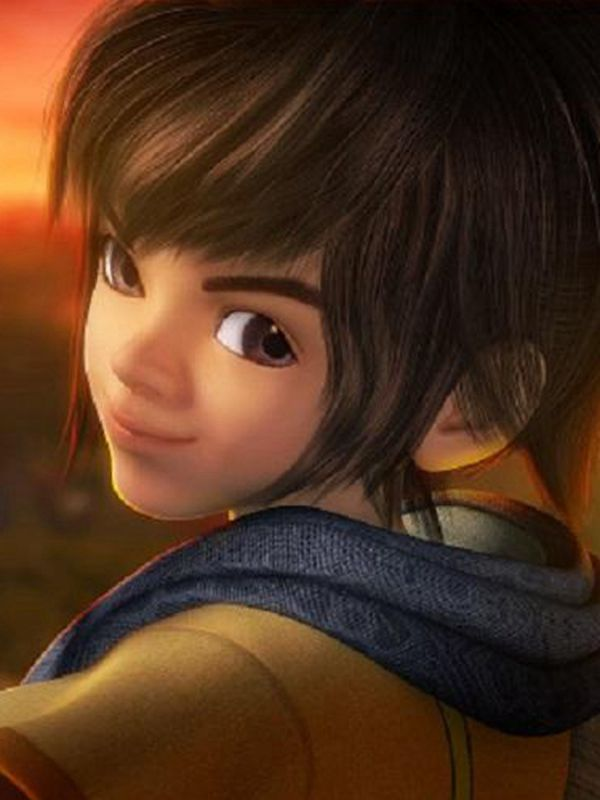

Her father was Jing Ke, the swordsman, and her mother was Lizzie. Appearance and incomprehension, but in martial arts, sleight of hand and many other aspects have a very high talent. AMNESIAC and hunted by the Qin for his life, with a mysterious past that affects the entire landscape. General respect for Guy Nieru father, with Guy Nieru learning fencing. Gradually honed in the process of escape, grow up, one after another to meet many high-ranking people, and one after another with the same age of Shaoyu, Gao Yue, Shi Lan became friends, but also witnessed the destruction of the world's last pure Mohist organ city, he became a Mohist by chance. He was a strange and ignorant man, but he had a strong sense of justice and cherished his companions. He fought without hesitation and always hoped to contribute to the cause of anti-qin and to rescue his childhood sweetheart.
